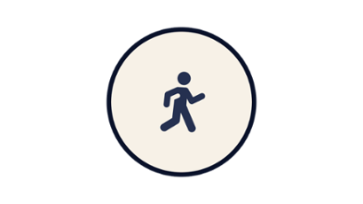
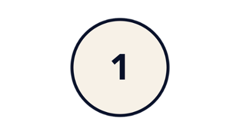
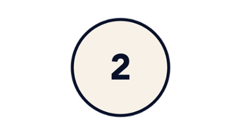
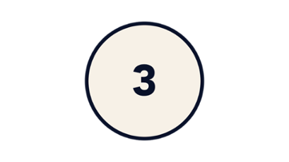

De Disneyland Pass: 1 jaar vol magie
Met ons nieuwe aanbod Disneyland Passen, heb je toegang tot de Disney Parken wanneer jij het wil. De Disneyland Passen zijn nu voor iedereen te koop (afhankelijk van beschikbaarheid).
Disneyland Pass Brons
€ 289,00 per jaar in 1 keer betalen
- 170 dagen* onbeperkt toegang tot beide Disney Parken(1)
- Parkeren inbegrepen(2)
Disneyland Pass Zilver
€ 499,00 per jaar in 1 keer betalen
- 300 dagen onbeperkt toegang tot beide Disney Parken(1)
- Parkeren inbegrepen(2)
- 10% korting in boetieks(3) en restaurants(4) in Disneyland Paris
- 10% korting op een jaarlijkse Disney PhotoPass™+(5)
Disneyland Pass Goud
€ 699,00 per jaar in 1 keer betalen
- Onbeperkt toegang(1) tot beide Disney Parken
- Parkeren inbegrepen(2)
- 15% korting in boetieks(3) en restaurants(4) in Disneyland Paris
- Een jaarlijkse Disney PhotoPass™+(5) en Extra Magic Time(6) inbegrepen
Waarom een Disneyland Pass kopen?
Ontdek de Disney Parken tot je ze op je duimpje kent
Beleef Disneyland Paris tijdens alle seizoenen
 Kom voor een dag of voor een paar uurtjes
Profiteer van kortingen en exclusieve voordelen
Hoe werkt het?
 Koop een Disneyland Pass en vind hem daarna terug in de Disneyland Paris app
 Reserveer vooraf je bezoekdatums
 Scan je Disneyland Pass vanuit de app bij de ingang van de Disney Parken vanaf de dag na de online aankoop
Veelgestelde vragen
Ik heb een Infinity, Magic Plus, Magic Flex of Discovery Jaarpas. Waar kan ik de informatie vinden over mijn voordelen?
Jaarpashouders kunnen hun Jaarpas blijven gebruiken totdat deze verloopt. Informatie over de oude Jaarpassen vind je hier of in je account in de officiële Disneyland Paris app.
Hoe kan ik een Disneyland Pass kopen?
Je kunt de Disneyland Pass in 1 keer betalen of kiezen voor een maandelijkse betaling (bekijk de voorwaarden van maandelijkse betalingen in de abonnementsvoorwaarden). De Disneyland Pass is op verschillende manieren te koop: - op onze website (maandelijks betalen is alleen beschikbaar in het Frans op de Franse versie van onze website www.disneylandparis.com). - bij de Disneyland Pass-kassa's bij de ingang van het Walt Disney Studios Park, - telefonisch bij de vakantie-experts via 020 7218974 (lokaal tarief) Bij een online aankoop van een Disneyland Pass is deze geldig vanaf de dag na de online aankoop. Bij een aankoop van een Disneyland Pass bij de Disneyland Pass-kassa’s bij de ingang van het Walt Disney Studios Park is deze geldig vanaf de dag van de aankoop. Bij een telefonische aankoop van een Disneyland Pass bij de vakantie-experts krijg je per post een tijdelijke voucher. Binnen 2 maanden na de telefonische aankoop moet je deze voucher inwisselen voor je definitieve Disneyland Pass. Je Disneyland Pass is geldig vanaf de dag van het inwisselen. Houd er rekening mee dat de beschikbaarheid beperkt is en dat verschillende soorten of alle Disneyland Passen mogelijk niet beschikbaar zijn op het moment van aankoop.
Kan ik mijn huidige Jaarpas inwisselen voor een Disneyland Pass als ik nog niet in de verlengingsperiode zit? Hoe werkt dat?
Als je Jaarpashouder bent en een Disneyland Pass wilt kopen, kun je de huidige Jaarpas annuleren. Deze optie is alleen beschikbaar bij de Disneyland Pass-kassa's bij de ingang van het Walt Disney Studios Park. Houd er rekening mee dat de beschikbaarheid beperkt is en dat verschillende soorten of alle Disneyland Passen mogelijk niet beschikbaar zijn op het moment van aankoop. Het is alleen mogelijk om een Disneyland Pass te kopen van een hogere waarde dan de huidige Jaarpas. De resterende waarde van je Jaarpas wordt berekend voor de resterende maanden en wordt in mindering gebracht op de prijs van je nieuwe Disneyland Pass. Het verschil moet in 1 keer betaald worden (geen maandelijkse betalingen mogelijk) en je nieuwe Disneyland Pass is 1 jaar geldig vanaf de aankoopdatum. Gebruik je maandelijkse betalingen voor je huidige Jaarpas, dan wordt het huidige contract beëindigd en worden er geen afschrijvingen meer gedaan. In dat geval heb je de mogelijkheid om je nieuwe Disneyland Pass in één keer of maandelijks te betalen.
Ik wil mijn huidige Jaarpas verlengen naar een Disneyland Pass. Wat moet ik doen en wanneer kan ik mijn nieuwe Pass gebruiken?
Als je Jaarpashouder bent en een Disneyland Pass wilt kopen, kun je de huidige Jaarpas annuleren. Deze optie is alleen beschikbaar bij de Disneyland Pass-kassa's bij de ingang van het Walt Disney Studios Park. Houd er rekening mee dat de beschikbaarheid beperkt is en dat verschillende soorten of alle Disneyland Passen mogelijk niet beschikbaar zijn op het moment van aankoop. Het is alleen mogelijk om een Disneyland Pass te kopen van een hogere waarde dan de huidige Jaarpas. De resterende waarde van je Jaarpas wordt berekend voor de resterende maanden en wordt in mindering gebracht op de prijs van je nieuwe Disneyland Pass. Het verschil moet in 1 keer betaald worden (geen maandelijkse betalingen mogelijk) en je nieuwe Disneyland Pass is 1 jaar geldig vanaf de aankoopdatum. Gebruik je maandelijkse betalingen voor je huidige Jaarpas, dan wordt het huidige contract beëindigd en worden er geen afschrijvingen meer gedaan. In dat geval heb je de mogelijkheid om je nieuwe Disneyland Pass in één keer of maandelijks te betalen.
Als ik mijn Disneyland Pass koop bij de Disneyland Pass-kassa's bij de ingang van het Walt Disney Studios Park, kan ik deze dan koppelen aan mijn persoonlijke account of in de officiële Disneyland Paris app?
Je kunt de Disneyland Pass koppelen aan je account in de officiële Disneyland Paris app in het onderdeel "Account". Klik op "Koppel ticket/boeking" en selecteer "Toegangsticket of Pass", scan vervolgens de QR-code van je Disneyland Pass of voer het Pass-nummer handmatig in. Om toegang te krijgen tot je Disneyland Pass, ga je in de app naar "Mijn tickets en Passen" in je Account en vervolgens naar "Mijn Disneyland Passen", of ga je op de website van Disneyland Paris naar je account en klik je op "Mijn Disneyland Passen".
Wat zijn de betalingsmogelijkheden voor de Disneyland Pass?
Je kunt jouw Disneyland Pass kopen met verschillende betalingsmogelijkheden: - In 1 keer betalen: op onze website, bij de Disneyland Pass-kassa's bij de ingang van het Walt Disney Studios Park of telefonisch via onze vakantie-experts. - Maandelijks betalen in euro's (11 gelijke maandelijkse termijnen, na een eerste betaling op de dag van aankoop): op onze website (beschikbaar in het Frans op de Franse versie van onze website www.disneylandparis.com) of bij de Disneyland Pass-kassa's bij de ingang van het Walt Disney Studios Park. Let op: wanneer je kiest voor maandelijkse betalingen moet je bankrekening uit een SEPA-land komen en moet de bank afschrijvingen in euro's accepteren, ofwel SEPA Direct Debit Core (SDD Core). Het Verenigd Koninkrijk en Ierland zijn beide SEPA-landen, maar controleer goed of banken uit deze landen voldoen aan bovenstaande voorwaarden en of er geen specifieke documenten nodig zijn om automatische incasso's te autoriseren voordat je kiest voor maandelijkse betalingen. Bankrekeningen die niet in euro's staan (zoals rekeningen in £GBP) zijn afhankelijk van wisselkoersen en bankkosten kunnen hierop van toepassing zijn. - Het identiteitsbewijs van de debiteur (betaler), die aanwezig moet zijn op het moment van verlenging. - De bankrekeninggegevens (RIB) van de rekening waarvan de verlengingsbetaling(en) worden afgeschreven. Deze rekening moet gevestigd zijn in de Single Euro Payments Area (SEPA). De bank die aan deze rekening is gekoppeld, moet ook Euro-afschrijvingen, genaamd "SEPA Direct Debit Core (SDD Core)", accepteren. - Een identiteitsbewijs voor ieder lid dat wil verlengen. Alle leden die willen verlengen moeten ook aanwezig zijn op het moment van de verlenging (met uitzondering van minderjarigen voor wie er een bewijs van ouderlijke affiliatie kan worden voorgelegd op het moment van de verlenging). Wanneer je online kiest voor maandelijkse betalingen (beschikbaar in het Frans op de Franse versie van onze website www.disneylandparis.com), moet je per post aan Disneyland Paris, Service Financier Pass Annuel/Disneyland Pass, TSA 80190, 37915 Tours Cedex 9, Frankrijk, de volgende documenten binnen 7 werkdagen retourneren, waaronder: - Het maandelijkse betalingsbestand - Eenmalige incassomachtiging ingevuld en ondertekend - Een kopie van een identiteitsbewijs van de te debiteren rekeninghouder - De RIB van de rekening die wordt afgeschreven.
Kan ik een Jaarpas uit het oude aanbod kopen?
Het oude aanbod van Jaarpassen is niet meer beschikbaar. Als je een bestaande geldige Jaarpas hebt, kun je deze blijven gebruiken totdat deze verloopt.
Is er een speciale aanbieding voor het verlengen van een Disneyland Pass?
De speciale aanbieding voor het verlengen van een Jaarpas is niet meer beschikbaar.
Zijn er evenementen gepland voor Disneyland Pass- en Jaarpashouders en hoe kan ik deze boeken?
Het hele jaar door zijn er verrassingen voor Disneyland Pass- en Jaarpashouders, waaronder speciale ontmoetingen met Disney Figuren en exclusieve evenementen. Houd onze Facebook en Instagram-pagina's in de gaten voor meer informatie.
Als de Disneyland Passen tijdelijk niet beschikbaar zijn, hoe kom ik er dan achter wanneer ze weer in verkoop komen?
Houd er rekening mee dat de beschikbaarheid beperkt is en dat verschillende soorten of alle Disneyland Passen mogelijk niet beschikbaar zijn op het moment van verlenging of aankoop. Houd onze website en social media-accounts in de gaten voor het laatste nieuws over Disneyland Passen.
Er is een beperkte hoeveelheid Disneyland Passen te koop. Het is op elk moment mogelijk dat Disneyland Passen niet meer verkocht worden. Door een Disneyland Pass te kopen, accepteer je onze abonnementsvoorwaarden. Het aanbod van voordelen en kortingen waar Disneyland Pass-houders recht op hebben, is geldig op de datum van publicatie en onder voorbehoud van latere wijzigingen. Deze voordelen en kortingen mogen niet worden gecombineerd met andere voordelen of kortingen en zijn alleen voor persoonlijk gebruik van de Disneyland Pass-houder (tenzij anders vermeld). De voordelen en kortingen zijn alleen geldig op de geldigheidsdagen van de Disneyland Pass. Disneyland Pass-houders moeten hun geldige Disneyland Pass tonen om deze voordelen en kortingen te gebruiken.
*Met de Disneyland Pass Bronze kun je opeenvolgende bezoekdagen alleen reserveren na het eerste bezoek aan de Parken.
(1) Afhankelijk van de geldigheidsdagen van de gekozen Disneyland Pass volgens de toegangskalender. Je moet je toegang reserveren via ons reserveringsplatform, met een maximum van 3 gelijktijdige reserveringen en onder voorbehoud van de maximale capaciteit van de Disney Parken.
(2) Toegang tot het parkeerterrein bij de ingang van de Disney Parken is gratis voor lichte voertuigen en motoren op de dagen dat je Disneyland Pass geldig is, tijdens de openingstijden van het Disneyland Park. Voor campers wordt een toeslag van €15 per dag gerekend. Parkeren op het parkeerterrein voor bussen is ten strengste verboden. Toegang tot het parkeerterrein geldt niet tijdens speciale evenementen (behalve bij speciale evenementen voor Disneyland Pass-houders). De toegang tot het parkeerterrein is strikt voor persoonlijk gebruik.
(3) Kortingen zijn van toepassing op de prijs inclusief btw die in de boetiek wordt getoond. Korting geldt niet op specifieke items en maximale aantallen zijn van toepassing (bekijk de lijst en voorwaarden in de boetiek). De korting kan niet worden gebruikt op shopdisney.com. Sommige boetieks kunnen bij uitzondering gesloten zijn.
(4) Kortingen zijn van toepassing op de gepubliceerde prijzen van maaltijden en niet-alcoholische dranken inclusief btw bij de restaurants in de Disney Hotels en Parken van Disneyland Paris. Deze kortingen zijn ook geldig bij de volgende restaurants in Disney Village: Annette's Diner, La Grange, Sports Bar, Billy Bob's Country Western Saloon, New York Style Sandwiches en The Steakhouse. De korting is geldig voor 6 personen inclusief de Disneyland Pass-houder. De korting is geldig op de volgende opties die je vooraf bijboekt (voor Disneyland Pass Silver en Gold): maaltijden bij Auberge de Cendrillon, maaltijden bij Plaza Gardens Restaurant en een verjaardagstaart. De korting is geldig op de dagen dat je Disneyland Pass geldig is. Korting is niet geldig bij kiosks en in de bars van onze Disney Hotels.
(5) Dit voordeel is beperkt tot maximaal één jaarlijkse Disney PhotoPass™+ per Disneyland Pass-houder. Deze Disney PhotoPass™+ is een jaar geldig vanaf de aankoop- of afhaaldatum (in vergelijking met de Premium PhotoPass™+ die 10 dagen geldig is en voor €90 in de boetieks wordt verkocht op het moment van publicatie) en kan worden gebruikt in bepaalde attracties, op Magic Shots locaties, iconische locaties en bij ontmoetingen met Disney Figuren waar een Disney PhotoPass™+ fotograaf aanwezig is. Deze geldigheidsduur staat los van die van de Disneyland Pass en kan niet worden gewijzigd. De Disney PhotoPass™+ kan worden opgehaald in geselecteerde boetieks van Disneyland Paris en op vertoon van een geldige Disneyland Pass.
(6) Toegang tot Disney Parken vóór de officiële openingstijd. De Disneyland Pass-houder heeft eerder toegang tot verschillende delen en attracties van het Disneyland Park en/of het Walt Disney Studios Park. De duur en het aantal beschikbare Disney Parken tijdens Extra Magic Time kan variëren.
Geaccepteerde betaalmethode
Mastercard, iDEAL, Visa, Paypal, American Express, Bancontact, Diners, Discover, JCB, UnionPay International.
Alle betaalkaarten die geassocieerd zijn met de bovenstaande netwerken worden geaccepteerd. We nodigen je uit om te controleren of deze netwerken op je betaalkaart vermeld staan..